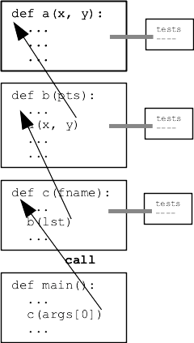

Python Style Decomposition
Why?
Why are CS106A programs structured the way the are - the many functions, the main(), the Doctests. These structures are not an accident. There is a reason it's all done a particular way, and here it is.
Software Engineering Crisis
Suppose you need to finish a 500 line coding project, or 1000 lines or 10,000 or 100,000 lines. How many hours do you suppose it will take to be finished?
As computers grew more powerful in the early days of computing, a disturbing pattern emerged. Anyone could finish a 500 line project, but evidently projects did scale up in size so nicely. A 10x larger project took more than 10x longer to complete. Very large projects might seemingly never be finished. The project might be abandoned or perhaps the users will just have to suffer along with the not-quite-done version. I think of this when I'm trying to complete an form online, and do something it doesn't like, and the system dumps you back at a blank form to re-enter the information. I pause at that moment to appreciate that somehow, a lot of software in the world is not really finished.
Software Costs - N2
As rough rule of thumb, the difficulty of completing software project of n lines seems to vary proportionate to about N2

The n2 curve gets extremely steep, piling incredible costs on the project as the number of lines goes up. Past some point, the project is practically impossible to complete. And yet you live in a world with many, enormous and pretty functional projects. how did CS escape the M2 trap?
Divide and Conquer - Functions - Modularity
The key step is not working on a 500 line project. Work on a series of 50 line functions - each nice and cheap - and bundle them together to make the 500 line. Or put another way, get left on the N2 curve.
This is why functions are such a central part of every programming language. Programming is always done at this scale, trying to get left on the curve. Striving to keep parts of the program separate from each other is also known as the strategy of "modularity".

Functions and Data
Once the program is divided into functions, how does data get to the right lines? This leads to the black box model of a function. Each function will have its parameters for data input and its return value for data output.
Aside: thought it appears to be a detail, keeping a strict structure for data-in and data-out turns out to be important. If functions are allowed to access data used by other functions arbitrarily, in effect it blends the lines of those functions together. It's possible in Python and other languages to use "global variables" to move data between functions not just at call/return boundaries. We'll never do that in CS106A, concentrating on the proper function-call, black-box model that keeps the functions separated from each other.
Program Picture - Data Flow
Each function takes in some data and computes a transformed version of it. You can think of the whole program as taking in, say, a text file of data to start, each function returning some refined version of the data, until we get nice graphs or conclusions out at the end, which then get adoring tweets!
Black Box - Abstraction and Implementation
You are already familiar with the input/output framing of a function. Here we'll add on CS terms "abstraction" and "implementation". These ideas are crucial for computer systems, but you may find them handy for many parts of life.
Black Box 1 - Abstraction
The abstraction of a function is what it accomplishes - what it requires as input and what it will produce. We can think of this as the "contract" for the function: what is required to go in? What the function promises to provide. This contract idea also appears in the triple quoted """Pydoc""" for a function.
Black Box 2 - Implementation
The implementation detail of a function is all the code and complexity within the function that actually does the work. The word "detail" is sometimes used as a blanket term for all the implementation features hidden inside a function.
Usually, the abstraction for a function is relatively simple compared to its implementation.
Calling A Function
What do you need to know to call a function correctly? Just the abstraction. The implementation can be hidden inside the function. Our strategy is to hide "implementation detail" inside the function so the rest of the program does not need to know or depend on it.
Ride To Airport Abstraction vs. Implementation
We use abstraction all the time in life - it's the natural way to get multiple people to coordinate on something.
Suppose you are getting a rid to the airport. What is the abstraction?
Ride to airport abstraction: Pick up time and place. Drop off time and place. Ride shared with others y/n.
Ride to airport implementation details, don't care about: Car has alloy wheels. Car Car has LED headlights. Color of the car seats. Is the driver wearing a hat. Car is gasoline powered.
The point: the abstraction is much simpler than the implementation. There is endless detail to the implementation that the abstraction does not need to care about. Calling a function is just the abstraction.
Decomposing a Program
1. function1()
Suppose you are writing a big program, and now it's time to work on function1():
def function1(s): """Given string s ...""" .. lots of detail .. .. in here ..
Work on function1. At this time, your mind is focussed on the function1 abstraction, and you are wrestling with the detail and bugs and whatnot of its implementation. Eventually you get it working perfectly.
2. function2()
Now it's time to work on function2() which calls function1() as a helper. Look at the key line below.
def function2(s):
"""..."""
....
part = function1(s) # the key line
...
What is your state of mind writing the key line? The abstraction of function1. Do not think about the implementation details of function1, they you were just working on it.
The Power Of Not Knowing
What the N2 trap tells us, is that keeping all the detail of a program in your mind at once is hopeless. Here we have sectioned off some of the program complexity inside function1. When it's time to call function1() we embrace not knowing what's going on in there. Just call it, and it should meet its contract.
This is why Python and other languages have the """PyDoc""" documentation, allowing the contract to be written out and easily accessible, so programmers can access just the abstraction they need, not looking at the implementation details.
Abstraction in CS
This technique of using the abstraction, isolating complexity within units is the central trick by which all large computer systems are built. Later in CS106A we will see function calls like the ones below
# Get list of filenames inside a directory
filenames = os.listdir('Downloads')
# Get the current date and time
now = datetime.now()
We know the abstraction of os.listdir() which is pretty simple - a list of string filenames from within a directory (folder). But the implementation .. who knows. The code within os.listdir() is quite complicated, accessing your operating system, perhaps accessing a USB key plugged in to your computer. Calling the function, we do not think about that. We assume the function does its job correctly, and we just carry on and use the results. This is the way.
Mechanics: Pydoc, Doctests
So the abstraction ideas translate to Python code designing a function. Choose a good function name, summarizing what it does. The parameters list its inputs. The """Pydoc""" at the top of a function summarizes its abstraction in words. What does it require as input? What does it promise to return as output? We generally use the word "given" in here to refer to the parameters, like "Given values x and y, returns something something."
You can delete the ":param s: " stuff PyCharm puts in. That syntax is seldom used at this time. You can summarize the abstraction with the "Given x ..." Pydoc.
The Doctests are another way to summarize the abstraction - not with words, but with a series of input/output examples. They also have the benefit of helping you debug your code.
def del_chars(s, target):
"""
Given string s and a "target" string,
return a version of s with all chars that
appear in target removed, e.g. s 'abc'
with target 'bx', returns 'ac'.
(Not case sensitive)
>>> del_chars('abC', 'acx')
'b'
>>> del_chars('ABc', 'aCx')
'B'
>>> del_chars('', 'a')
''
"""
result = ''
target = target.lower()
for ch in s:
if ch.lower() not in target:
result += ch
return result
How To Build A Program
Copyright 2020 Nick Parlante